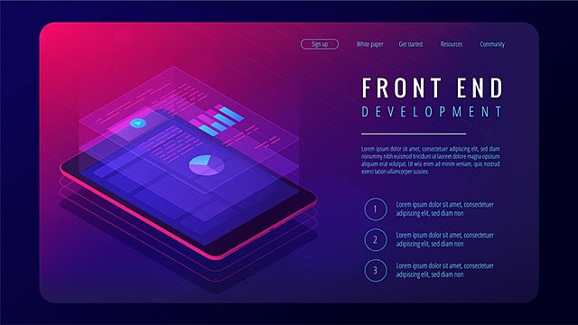

AYSU AŞÇI
Anasayfa
Projeler
İletişim
Akademi
Hakkımda
Ben Aysu Aşçı, sayfama hoş geldin!
Öncelikle kendimi tanıtmak isterim. Psikoloji alanındaki akademik eğitimimin ardından, insan zihninin derinliklerine olan merakım, beni insanların dijital dünyayla nasıl etkileşime girdiğini anlama yoluna sürükledi. Ve bu yolculukta Acun Medya Akademi ile tanışarak yoluma front-end alanında ilerlemeye karar verdim.Frontend geliştirme, benim için bir yandan teknik beceriler ve estetik duygusunun birleştiği, diğer yandan da kullanıcıların dijital dünyayla nasıl etkileşime girdiklerini şekillendirme fırsatı sunan bir sanat formu. Bu alanda yaratıcılığımı kullanarak, etkileşimli ve kullanıcı dostu web siteleri ve uygulamalar oluşturmayı hedefliyorum.
